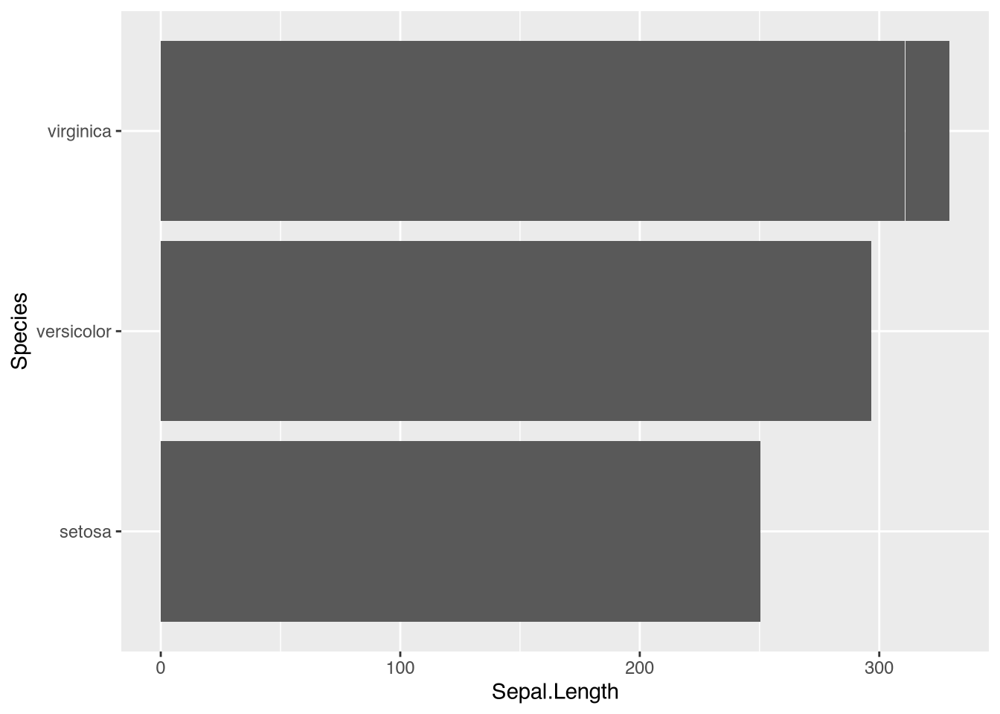
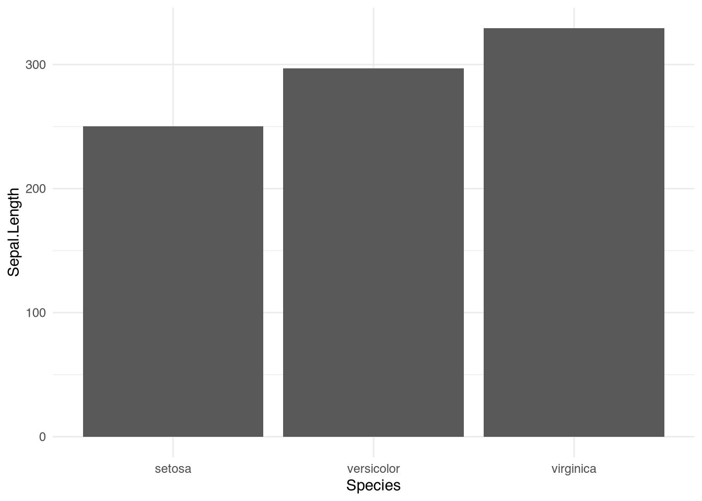

Section 1 useR. Intro to R and basic features
1.1 Welcome R user
- R is a programming language designed for:
- Statistical computing
- Data analysis
- Visualization

1.2 ¿Why learn R?
- Open source and free
- big community
- ~ 13.000 packages
- Reproducible science
is just this
but…
1.4 Getting Started
- Install R from CRAN
- Install RStudio (optional, but highly recommended)
- Write your first R command:
## [1] "Hello, world!"1.5 Basic Data Types
- Numeric: Numbers (e.g.,
3.14,42) - Character: Text strings (e.g.,
"fish") - Logical:
TRUEorFALSE - Factor: Categorical variables
1.8 Visualization
- Example base plot:
Data used
| Sepal.Length | Sepal.Width | Petal.Length | Petal.Width | Species |
|---|---|---|---|---|
| 5.1 | 3.5 | 1.4 | 0.2 | setosa |
| 4.9 | 3.0 | 1.4 | 0.2 | setosa |
| 4.7 | 3.2 | 1.3 | 0.2 | setosa |
| 4.6 | 3.1 | 1.5 | 0.2 | setosa |
| 5.0 | 3.6 | 1.4 | 0.2 | setosa |
| 5.4 | 3.9 | 1.7 | 0.4 | setosa |

plottex <- ggplot(iris, aes(x = Sepal.Length,
y = Species)) + geom_bar(stat = "identity") +
theme_minimal()
plottexplottex <- ggplot(iris, aes(x = Sepal.Length,
y = Species)) + geom_bar(stat = "identity") +
theme_minimal() + coord_flip()
plottex
1.10 Statistical Analysis
- Linear regression example:
##
## Call:
## lm(formula = mpg ~ wt, data = mtcars)
##
## Residuals:
## Min 1Q Median 3Q Max
## -4.5432 -2.3647 -0.1252 1.4096 6.8727
##
## Coefficients:
## Estimate Std. Error t value Pr(>|t|)
## (Intercept) 37.2851 1.8776 19.858 < 2e-16 ***
## wt -5.3445 0.5591 -9.559 1.29e-10 ***
## ---
## Signif. codes: 0 '***' 0.001 '**' 0.01 '*' 0.05 '.' 0.1 ' ' 1
##
## Residual standard error: 3.046 on 30 degrees of freedom
## Multiple R-squared: 0.7528, Adjusted R-squared: 0.7446
## F-statistic: 91.38 on 1 and 30 DF, p-value: 1.294e-10